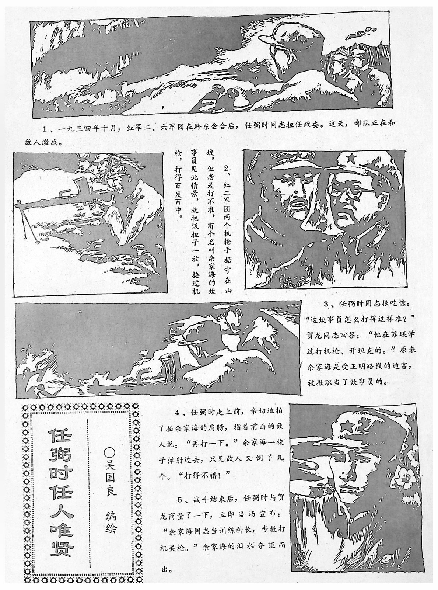

吴国良编绘 《人事》1986年第6期（总第9期），封三
任弼时任人唯贤
Ren Bishi Appoints by Merit
- Panel text
- 一九三四年十月，红军二、六军团在黔东会合后，任弼时同志担任政委。这天，部队正在和敌人激战。
In October 1934, after the Second and Sixth Army Groups of the Red Army joined forces in eastern Guizhou, Comrade Ren Bishi became political commissar. One day the troops were locked in fierce battle with the enemy. - 红二军团两个机枪手据守在山坡，但老是打不准，有个名叫余家海的炊事员见此情景，就把饭担子一放，接过机枪，打得百发百中。
Two machine-gunners of the Second Army Group held a hillside but kept missing. A cook named Yu Jiahai, seeing this, put down his carrying pole of rations, took over the machine gun and hit with every shot. - 任弼时同志很吃惊：“这炊事员怎么打得这样准？”贺龙同志回答：“他在苏联学过打机枪、开坦克的。”原来余家海是受王明路线的迫害，被撤职当了炊事员的。
Comrade Ren Bishi was astonished: “How can this cook shoot so accurately?” Comrade He Long replied: “He learned machine-gunnery and tank-driving in the Soviet Union.” Yu Jiahai, it turned out, had been persecuted under the Wang Ming line and demoted to cook. - 任弼时走上前，亲切地拍了拍余家海的肩膀，指着前面的敌人说：“再打一下。”余家海一梭子弹射过去，只见敌人又倒了几个。“打得不错！”
Ren Bishi stepped forward, patted Yu Jiahai warmly on the shoulder and, pointing at the enemy ahead, said: “Fire again.” Yu Jiahai loosed a burst, and several more of the enemy fell. “Good shooting!” - 战斗结束后，任弼时与贺龙商量了一下，立即当场宣布：“余家海同志当训练科长，专教打机关枪。”余家海的泪水夺眶而出。
After the battle Ren Bishi conferred briefly with He Long and announced on the spot: “Comrade Yu Jiahai will be chief of the training section, teaching machine-gunnery.” Tears burst from Yu Jiahai's eyes.
- 一九三四年十月，红军二、六军团在黔东会合后，任弼时同志担任政委。这天，部队正在和敌人激战。
- Description
- Five-panel picture story: in 1934 Ren Bishi finds that a cook, demoted under the 'Wang Ming line', is a crack machine-gunner, and appoints him training section chief on the spot.
- Note
- 任人唯贤 ('appoint people by merit') is the opposite of 任人唯亲 ('appoint people by kinship').
- Artist
- Wu Guoliang 吴国良 (adapted and drawn)
- Published in
- 《人事》1986年第6期（总第9期）, inside back cover
- Themes
- Talent and its neglect · Exemplary history · Picture stories (连环画)

Cite
Wu Guoliang, “任弼时任人唯贤” [Ren Bishi Appoints by Merit], Renshi (Personnel) 《人事》, 1986, no. 6, inside back cover.